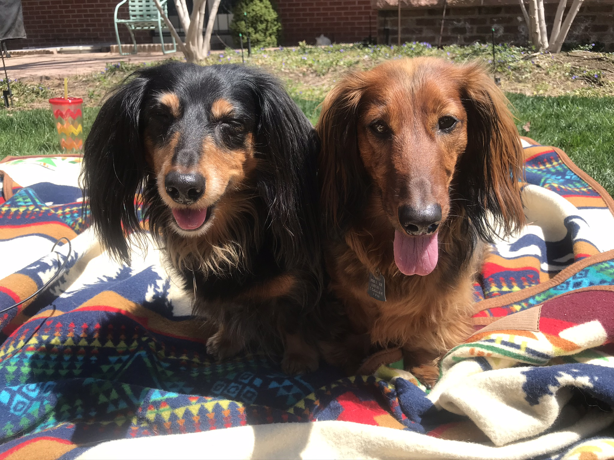
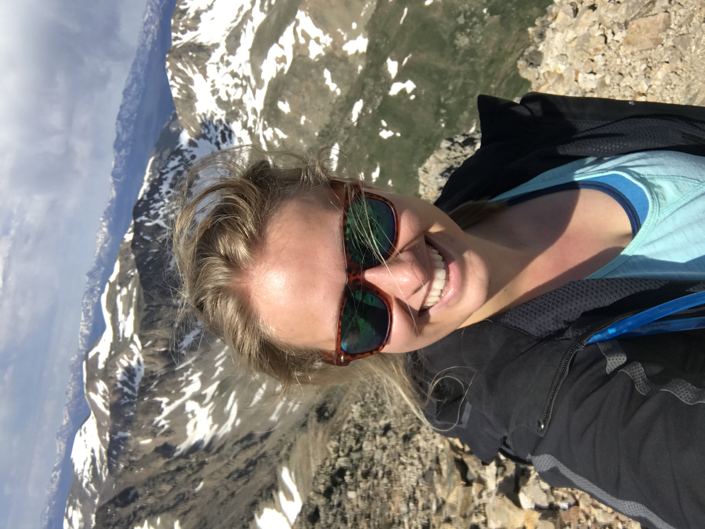

dogs
Honestly, dogs and specifically my dogs are very important to me and deserve their own section here.
Below are my families two long-haired dachshunds Oscar (left) and George (right).

My family has had a series of dachshunds throughout my life: Mikey, Sammy, Charlie, Oscar, and George.
We love giving our pets human names and I hope to have a dog named something like Garry one day.
Through university I was part of the animal welfare club and volunteered weekly at the local animal shelter.
I hope to get a dog of my own soon!
developing
I am a developer with a focus in C#/.Net framework. I developed an interest in coding while working
in my previous position--one of which was a tech startup. I loved seeing people being creative and coming up
with great idea and innovation but was frustrated that so many times that these great ideas were delayed by the need for more developers.
I'm a do-er. I wanted to be one of those developers that was bring life to all of these creative ideas. After years of mulling it over--a lot--
I finally enrolled in the Grand Cirus C#/.Net bootcamp developing skills in: .NET Core, SQL Server,
Agile, Git/GitHub, EF Core, HTML5/CSS, OOP, Pair Programming, TDD, Web APIs, and Data Structures and Algorithms. I hope to find my first full-time developer role in March.
homeTown
I was born and raised in Denver, CO. It is a beautiful city, with lots of nearby outdoor activities.
I grew up skiing and hiking in the mountains and love to go whenever I have the chance

I love being outdoors and spent winter teaching people with disabilities how to ski and summer working on a ranch in Wyoming.
In addition to being outdoors I love cooking and trying new and delicious places to eat.
I recently moved to Detroit and I am looking forward to seeing all that Detroit has to offer!